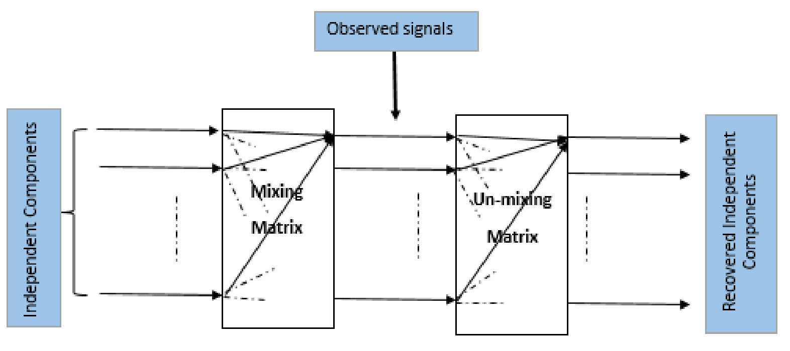

Independent component analysis
Introduction
In the Independent Component Analysis (ICA), we observe $n$ scalar random variables $x_1,x_2,x_3,.....,x_n$, which are assumed to be a linear combination of $m (m\leq n)$ independent components (IC's) $s_1,s_2,s_3,.....,s_m$. The IC's are mutually statistically independent (i.e. one variable does not give any information about the other variables), and zero mean.
In a matrix form, we can write this relationship as follows:
\begin{equation}
\mathbf{x}=A\mathbf{s}
\label{eq_ica}
\end{equation}
Where $\mathbf{x}$ is the $n$-dimensional observed signal vector, $\mathbf{s}$ contains the independent components, and $A$ is called the mixing matrix.
\begin{align}
\begin{bmatrix}
x_{1} \\
x_{2} \\
\vdots \\
x_{n}
\end{bmatrix}= \begin{bmatrix}
a_{11}&a_{12}&\cdots &a_{1n} \\
a_{21}&a_{22}&\cdots &a_{2n} \\
\vdots & \vdots & \ddots & \vdots\\
a_{n1}&a_{n2}&\cdots &a_{nn}
\end{bmatrix}
\begin{bmatrix}s_{1} \\ s_{2} \\\vdots\\s_{n}\end{bmatrix}
\end{align}
For the mathematical convenience, we have assumed that the independent components have unit variance.
Prewhitening/Sphering
This is a preprocessting step to speed up the ICA algorithm. First we do the centering
of the data by subtracting the mean. Then the observed vector $\mathbf{x}$ is linearly
transformed to a vector $\mathbf{\tilde{x}}$, which is white. This means that the transformed data
is uncorrelated with its variance equals to unity. The preprocessing step is called whitening or sphering. Mathematically, we can write it as:
$$E[\mathbf{\tilde{x}}\mathbf{\tilde{x}}^T]=I$$
Whitening can be done by the eigenvalue decomposition of the covariance matrix of $\mathbf{x}$, $E[\mathbf{xx^T}]=EDE^T$ ,
where $E$ is the orthogonal matrix of the eigenvectors of $E[\mathbf{xx^T}]$ and $D$ is the diagonal matrix of its eigenvalues.
The whitened data can be obtained by:
\begin{equation}
\mathbf{\tilde{x}}=ED^{-1/2}E^T\mathbf{x}
\label{eq_whitening}
\end{equation}
-
Formulation of the problem
Let, $ED^{-1/2}E^T=M$, then Equation $\mathbf{\tilde{x}}=ED^{-1/2}E^T\mathbf{x}$ can be re-written as: $$\mathbf{\tilde{x}}=M\mathbf{x}$$
Using Equation \ref{eq_ica}, we can write the above equation as:
$$\mathbf{\tilde{x}}=MA\mathbf{s}$$ Let, $MA=\tilde{A}$, then we can re-write $\mathbf{\tilde{x}}$ as:
\begin{equation}
\boxed{\mathbf{\tilde{x}}=\tilde{A}\mathbf{s}}
\label{eq_ica_2}
\end{equation}
We can define $\tilde{A}$ as a new transformed mixing matrix. $\tilde{A}$ is an orthogonal matrix, because the independent components have unit variance, i.e., $E[\mathbf{ss^T}]=I$. It can be shown that $\tilde{A}$ is an orthogonal matrix as follows:
\begin{align*}
E[\mathbf{\tilde{x}\tilde{x}^T}] = I\\
E[\tilde{A}\mathbf{ss^T}\tilde{A}^T]=I\\
\tilde{A}E[\mathbf{ss^T}]\tilde{A}^T=I\\
\tilde{A}\tilde{A}^T=I
\end{align*}

Figure : Overview of the ICA problem. The independent components $\mathbf{s}$ and the mixing
matrix $A$ both are unknown. The goal is to estimate $A$ and $\mathbf{s}$ from the known $\mathbf{x}$.
The goal of the ICA is to estimate the full rank mixing matrix $A$ and the independent components $\mathbf{s}$ from the observed original signal $\mathbf{x}$.
For simplicity of notation, we denote the preprocessed $\mathbf{\tilde{x}}$ as $\mathbf{x}$ and the new transformed mixing matrix as $A$ from now on, omitting the \textit{tildes}. Instead of estimating a full rank matrix, we estimate the orthogonal matrix $A$. We know that, the number of free parameters of an $n\times n$ orthogonal matrix is $\frac{n(n-1)}{2}$ . So, whitening solves half of the ICA problem. After estimating $A$, we compute the inverse of $A$ (say $W$, it is called unmixing matrix), then the independent components are obtained by: \begin{equation} \begin{aligned} \mathbf{s} &=(A^{-1})^T\mathbf{x}\\ \mathbf{s} &=W^T\mathbf{x} \end{aligned} \label{eq_ica_3} \end{equation} The goal of the ICA is to find the linear mapping $W$ such that the independent components are maximally statistically independent: $$\mathbf{s}=W^T\mathbf{x}$$ The columns of the unmixing matrix $W$ are the weight vectors, i.e., the direction of the independent components.. The summary of the ICA algorithm is presented in this section. Suppose we have a data matrix $X \in \mathbb{R}^{n\times P}$, where each column of the data matrix $X$ represents a $n$-dimensional sample vector. We desire to extract $C$ numbers of independent components , where $C\leq n$. The task is to find the un-mixing matrix $W \in \mathbb{R}^{n\times C}$ onto which the observed data matrix $X$ is projected to obtain the independent component matrix $S \in \mathbb{R}^{C\times P}$.